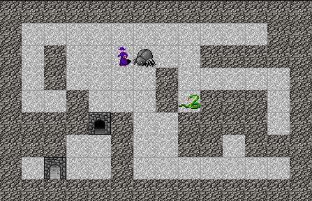

Haskell roguelike - Collisions
Collisions
The player can now move but we’ve given it too much freedom. The player can move over any other entity and even move off the screen.

World size
The code supports an infinite world, but it often makes sense to have a limit e.g. for a level with a small map. cfgMinMaxBounds constrains the world size (in world coordinates). The values are interpreted as (minX, maxX, minY, maxY)
07_collisions/src/GameCore.hs (46 to 48)
data Config = Config { _cfgKeys :: !(Map Text Text)
, _cfgMinMaxBounds :: !(Int, Int, Int, Int) -- (minX, maxX, minY, maxY)
}07_collisions/src/GameEngine.hs (115 to 115)
Unacceptable moves
runAction is changed from simply applying the move (the delta x & y) to calling tryMoveActor which does collision detection.
07_collisions/src/GameEngine.hs (330 to 334)
runAction :: World -> RogueAction -> World
runAction world action =
case action of
ActMovePlayer move ->
fromMaybe world $ tryMoveActor world (world ^. wdPlayer ^. plActor) movetryMoveActor is defined as
07_collisions/src/GameEngine.hs (339 to 339)
tryMoveActor returns a Maybe World. If the move is not accepted it returns Nothing. runAction uses fromMaybe to return the current world if it gets a Nothing. I.e. nothing changes, unless a Just World is returned.
Working with any actor
There is already a function to get all actors (normal actors and the player’s actor). Let’s add a function that can update (replace) any actor.
07_collisions/src/GameEngine.hs (388 to 393)
-- | Update either the player's actor, or one of the world actors
updateActor :: World -> Actor -> World
updateActor w actor =
if w ^. wdPlayer ^. plActor ^. acId == (actor ^. acId)
then w & (wdPlayer . plActor) .~ actor -- update the player's actor
else w & wdActors %~ Map.adjust (const actor) (actor ^. acId) -- update other actor, nop if aid not found- Check if the actor’s id matches the player’s actors’ id.
- If it is update the player’s actor.
- If not use
Data.Map.Strict.adjustto try update one of the other actors.
Collisions
07_collisions/src/GameEngine.hs (340 to 376)
tryMoveActor :: World -> Actor -> (Int, Int) -> Maybe World
tryMoveActor world actor (dx, dy) =
let
-- Get the world bounds
(minX, maxX, minY, maxY) = world ^. wdConfig ^. cfgMinMaxBounds
-- Actor's position
(WorldPos wdPos) = actor ^. acWorldPos
-- Where the actor whats to move to, using bimap :: (a -> b) -> (c -> d) -> (a, c) -> (b, d)
tryWorldTo@(tx, ty) = bimap (+ dx) (+ dy) wdPos
tryWorldTo' = WorldPos tryWorldTo
in
-- Is the actor trying to move out of the world?
if tx < minX || ty < minY || tx >= maxX || ty >= maxY
then Nothing
else
let
-- Entity at destination
destEntity = (world ^. wdMap ^.at tryWorldTo')
destEntityType = _enType <$> destEntity
-- Actors at destination
destActors = filter (\a -> a ^. acWorldPos == tryWorldTo') (getAllActors world)
-- Is the move allowed
canMove = case (destActors, destEntityType) of
([], Just E.Blank) -> True
([], Just E.Door) -> True
([], Nothing) -> True
_ -> False
in
if canMove
then
let movedActor = actor & acWorldPos .~ tryWorldTo' in
Just $ updateActor world movedActor
else
NothingtryWorldTo is the position the actor is trying to move to. It is created by applying the delta (x, y) to the actors current position using bimap, which can apply a function to both parts of the (x, y) tuple.
07_collisions/src/GameEngine.hs (351 to 352)
-- Where the actor whats to move to, using bimap :: (a -> b) -> (c -> d) -> (a, c) -> (b, d)
tryWorldTo@(tx, ty) = bimap (+ dx) (+ dy) wdPos check if the player is trying to move out of the world
07_collisions/src/GameEngine.hs (358 to 361)
-- Is the actor trying to move out of the world?
if tx < minX || ty < minY || tx >= maxX || ty >= maxY
then Nothing
elsethen we check for collisions
07_collisions/src/GameEngine.hs (364 to 382)
let
-- Entity at destination
destEntity = (world ^. wdMap ^.at tryWorldTo')
destEntityType = _enType <$> destEntity
-- Actors at destination
destActors = filter (\a -> a ^. acWorldPos == tryWorldTo') (getAllActors world)
-- Is the move allowed
canMove = case (destActors, destEntityType) of
([], Just E.Blank) -> True
([], Just E.Door) -> True
([], Nothing) -> True
_ -> False
in
if canMove
then
let movedActor = actor & acWorldPos .~ tryWorldTo' in
Just $ updateActor world movedActor
else
Nothing- Get all actors and entities at the destination
- Decide if the move is allowed. Here we are allowing any actor to move only over blank tiles, open doors and empty cells.
- Call updateActor if the move is allowed.
Now the player can’t move over walls and other actors. The player can still move off the screen though, that will be fixed shortly.
Chapters
Changes
src/GameCore.hs
diff -w -B -a -d -u -b --new-file 06_moving/src/GameCore.hs 07_collisions/src/GameCore.hs
--- 06_moving/src/GameCore.hs
+++ 07_collisions/src/GameCore.hs
@@ -42,7 +42,9 @@
, _wdActors :: !(Map Aid Actor)
}
-newtype Config = Config { _cfgKeys :: Map Text Text
+
+data Config = Config { _cfgKeys :: !(Map Text Text)
+ , _cfgMinMaxBounds :: !(Int, Int, Int, Int) -- (minX, maxX, minY, maxY)
}
src/GameEngine.hs
diff -w -B -a -d -u -b --new-file 06_moving/src/GameEngine.hs 07_collisions/src/GameEngine.hs
--- 06_moving/src/GameEngine.hs
+++ 07_collisions/src/GameEngine.hs
@@ -15,7 +15,7 @@
import qualified Data.ByteString.Lazy as BSL
import qualified Codec.Compression.BZip as Bz
import qualified System.Random as Rnd
-import Control.Lens (_1, (^.), (.~), (%~))
+import Control.Lens (at, _1, (^.), (.~), (%~))
import qualified Control.Arrow as Ar
import Control.Concurrent.STM (atomically, readTVar, newTVar, modifyTVar', TVar)
@@ -111,9 +110,12 @@
, ("b" , "Move:down-left")
, ("pagedown", "Move:down-right")
]
- }
+ , _cfgMinMaxBounds = (0, 30, -30, 0)
+
+ }
+
mkPlayer =
Player { _plConn = conn
, _plScreenSize = screenSize
@@ -329,11 +326,69 @@
foldl' runAction world actions
+
runAction :: World -> RogueAction -> World
runAction world action =
case action of
- ActMovePlayer (dx, dy) ->
+ ActMovePlayer move ->
+ fromMaybe world $ tryMoveActor world (world ^. wdPlayer ^. plActor) move
- world & (wdPlayer . plActor . acWorldPos) %~ (\(WorldPos (x, y)) -> WorldPos (x + dx, y + dy))
+
+
+tryMoveActor :: World -> Actor -> (Int, Int) -> Maybe World
+
+tryMoveActor world actor (dx, dy) =
+ let
+ -- Get the world bounds
+ (minX, maxX, minY, maxY) = world ^. wdConfig ^. cfgMinMaxBounds
+
+ -- Actor's position
+ (WorldPos wdPos) = actor ^. acWorldPos
+
+
+ -- Where the actor whats to move to, using bimap :: (a -> b) -> (c -> d) -> (a, c) -> (b, d)
+ tryWorldTo@(tx, ty) = bimap (+ dx) (+ dy) wdPos
+
+ tryWorldTo' = WorldPos tryWorldTo
+ in
+
+
+ -- Is the actor trying to move out of the world?
+ if tx < minX || ty < minY || tx >= maxX || ty >= maxY
+ then Nothing
+ else
+
+
+ let
+ -- Entity at destination
+ destEntity = (world ^. wdMap ^.at tryWorldTo')
+ destEntityType = _enType <$> destEntity
+ -- Actors at destination
+ destActors = filter (\a -> a ^. acWorldPos == tryWorldTo') (getAllActors world)
+ -- Is the move allowed
+ canMove = case (destActors, destEntityType) of
+ ([], Just E.Blank) -> True
+ ([], Just E.Door) -> True
+ ([], Nothing) -> True
+ _ -> False
+ in
+ if canMove
+ then
+ let movedActor = actor & acWorldPos .~ tryWorldTo' in
+ Just $ updateActor world movedActor
+ else
+ Nothing
+
+
+
+
+
+-- | Update either the player's actor, or one of the world actors
+updateActor :: World -> Actor -> World
+updateActor w actor =
+ if w ^. wdPlayer ^. plActor ^. acId == (actor ^. acId)
+ then w & (wdPlayer . plActor) .~ actor -- update the player's actor
+ else w & wdActors %~ Map.adjust (const actor) (actor ^. acId) -- update other actor, nop if aid not found
+